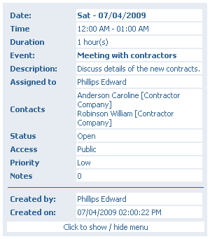

|

|
This tooltip is visible when you hover mouse over the icon on event frame in any of grid views.
Date - the day the event is scheduled for
Time - the exact hours of the start and the end of the event
Duration - the amount of time between starting and ending hour of the event
Event - the title of the event; an outline
Description - more information about the event (text)
Assigned to - people from your company directly involved in the event progress
Contacts - customers, contractors or other people who take part in the event or are interested in it.
Status - informs about the stage in which event is: "Open" - still before start, "In Progress", "Closed" - finished or "Canceled"
Access - whether the event can be read and changed by anyone in the system ("Public"), read by anyone, but changed only by the creator ("Public, Read-Only") or read and changed only by creator ("Private")
Priority - tells how important the event is; three possibilities here: Low, Medium and High
Notes - the number of notes that are attached to this event
Created by - the date and time of event's creation
Created on - person who created the event
|
 View event's details
View event's details
 Edit event's details
Edit event's details
 Delete event
Delete event
 Change the date of the event - clicking on this will display a small calendar, where you can choose any date.
Change the date of the event - clicking on this will display a small calendar, where you can choose any date.
 Close event - you can use this to mark that the Event has ended or was cancelled.
Close event - you can use this to mark that the Event has ended or was cancelled.
 /
/ These icons indicate whether or not the event is subscribed, i.e. whether you will be noticed if the event is changed. Green one means, that you subscribe the event and clicking on it will unsubscribe the event. Opposite, gray one says that event isn't subsribed and clicking on it will start subscription.
These icons indicate whether or not the event is subscribed, i.e. whether you will be noticed if the event is changed. Green one means, that you subscribe the event and clicking on it will unsubscribe the event. Opposite, gray one says that event isn't subsribed and clicking on it will start subscription.
 This is an information icon. By hovering mouse over it you will see additional information about the event, like time of creation and last edition and who created and edited it.
This is an information icon. By hovering mouse over it you will see additional information about the event, like time of creation and last edition and who created and edited it.
 Adding a new event - follow up to the displayed one.
Adding a new event - follow up to the displayed one.
 Creation of a new task - follow up to the displayed event.
Creation of a new task - follow up to the displayed event.
 Creation of a new phone call - follow up to the displayed event.
Creation of a new phone call - follow up to the displayed event.